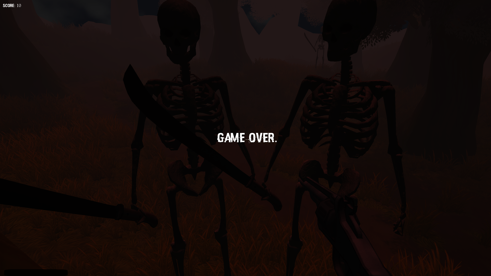

The main areas of animation and modeling for this game were including attack and death animations to enemies, animating the barrel of the gun to light up in sync with shot mp3 sound when shot, adding first-person controller to the map we created, and creating a health and damage system.
To create functionality in Unity we used C# to create interaction between the player and enemies, as well as the score, and health bar.
